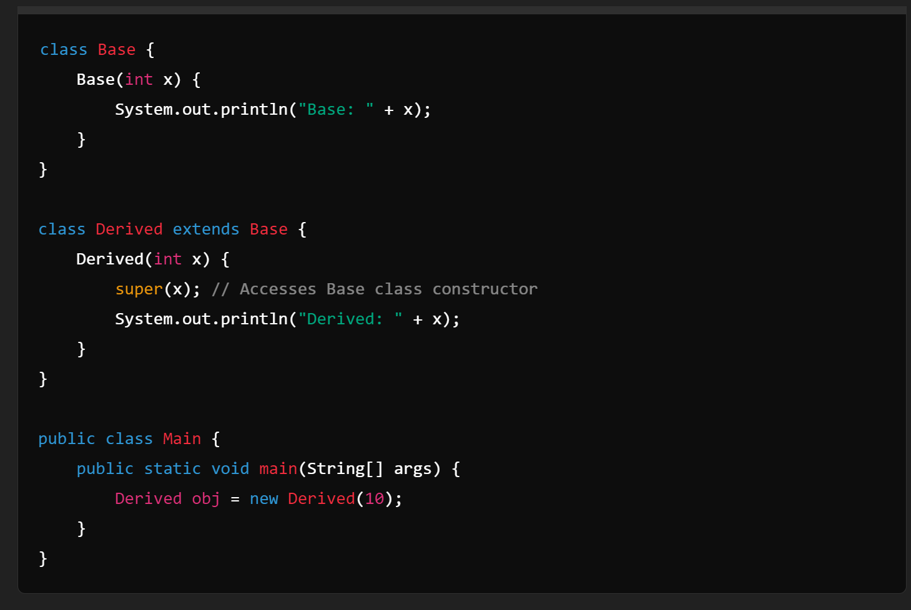

Theory Questions DSA Answers
1. What do you mean by Object oriented programming? Advantages of object oriented programming language over procedural (Structural) programming language.
Object-Oriented Programming (OOP):Object-oriented programming (OOP) is a computer programming model that organizes software design around data, or objects, rather than functions and logic. An object can be defined as a data field that has unique attributes and behavio OOP organizes code into objects representing real-world entities, enhancing modularity, reusability, and scalability. Unlike procedural programming, which is linear and function-based, OOP encapsulates data and behavior, promoting code maintenance and reducing redundancy.
2. What are the four main features of OOPs?
Main Features of OOP: Encapsulation, inheritance, polymorphism, and abstraction. Encapsulation bundles data and methods, inheritance enables new classes from existing ones, polymorphism allows method overriding, and abstraction simplifies complex systems by focusing on essential features.
3. What do you mean by class and objects?

Class and Objects: A class is a blueprint for creating objects, defining attributes and methods. Objects are instances of classes, representing specific elements with defined properties and behaviors.
4. Types of variables. Explain with examples?
Types of Variables: Local (defined within methods, limited scope), Instance (defined in class, unique to object), and Static (shared across all instances, class level).
5. What is a constructor? Different type of constructor with example?
In Java, a constructor initializes objects upon creation. It shares the class name and can accept parameters for custom initialization. If no constructor is defined, Java provides a default constructor. Parameterized constructors allow objects to be initialized with specific values. Constructor overloading enables multiple constructors with different parameter lists. While Java doesn't have a direct equivalent to copy constructors, objects can be cloned using custom methods.
6. What are the characteristics of an abstract class?
1) Cannot be instantiated. 2) Contains abstract and concrete methods. 3) Provides a template for subclasses. 4) Promotes code reuse. 5) Establishes a common interface for derived classes. 6) Can have fields and constructors. 7) Helps achieve abstraction in OOP.
7. Differentiate between abstract class and Interface.

Abstract Class vs Interface: Abstract classes can have method implementations and state; interfaces cannot have implementations (in older Java versions) and represent pure abstraction.
8. Differentiate between constructor and methods.

Constructor vs Methods: Constructors initialize objects; methods define object behaviors. Constructors have no return type, named after the class, while methods have a return type and can have any name.
9. Difference between overloading and overriding.

Overloading vs Overriding: Overloading involves multiple methods with the same name but different parameters. Overriding means redefining a superclass method in a subclass.
10. Purpose of this keywords.
Purpose of this keyword: Refers to the current object instance, used to access instance variables, methods, and constructors.
11. What do you mean by super keyword?
Super Keyword: Refers to the parent class, used to access superclass methods, variables, and constructors.
12. Purpose of final keyword.
Final Keyword: Used to declare constants, prevent inheritance (final class), and method overriding (final method).
13. What is auto-boxing and unboxing in java? Explain with some example

Auto-boxing and Unboxing: Automatic conversion between primitive types and their corresponding object wrappers. Example: int to Integer (auto-boxing), Integer to int (unboxing).
14. What is Upcasting (widening) And Downcasting (narrowing) in Java?

Upcasting and Downcasting: Upcasting converts a subclass to a superclass type (widening). Downcasting converts a superclass to a subclass type (narrowing).
15. What happens if an exception is not handled in Java?
Unhandled Exception: If an exception is not handled, the program terminates abruptly, and the call stack is printed, leading to potential data loss and application instability.
16. Difference between finally and final.

Finally vs Final: Finally is a block used in exception handling to execute code regardless of exception. Final is a keyword to define constants, prevent inheritance, and method overriding.
17. Difference between throw and throws in java.

Throw vs Throws: Throw is used to explicitly throw an exception. Throws declare that a method might throw exceptions, delegating error handling to the caller.
18. What are the differences between error and exception?

Error vs Exception: Errors are serious system-level issues, generally irrecoverable (e.g., OutOfMemoryError). Exceptions are conditions that applications might want to catch and handle (e.g., IOException).
19. What is the difference between Checked and Unchecked Exceptions in Java?

Checked vs Unchecked Exceptions: Checked exceptions are checked at compile-time (e.g., IOException). Unchecked exceptions are checked at runtime (e.g., NullPointerException).
20. Can we have an empty catch block?
Yes, it is technically possible to have an empty `catch` block in Java, but it's considered bad practice. An empty `catch` block does not handle exceptions properly—it silently ignores any exceptions that occur within its corresponding `try` block. This can lead to difficult debugging and unpredictable program behavior since the error is not addressed or logged. It's recommended to at least log the exception or handle it appropriately to maintain application stability and aid in debugging.
21. Can you have private constructors (yes/no)? If yes then how 1t can be accessed? If no then discuss why
es we can have private constructors in a class and yes they can be made accessible by making some static methods which in turn create the new object for the class. So to make an object of this class, the other class has to use the static methods.
22. Why main method is sta11c? fa.plain
The main() method in Java is static so that the JVM may call it without creating an instance of the class that contains the main() function. This allows the JVM to start the execution of the program without needing to instantiate any objects.
How parameterized con~tructors are accessed in inheritance? Explam with suitable example
In Java inheritance, parameterized constructors of the base class are accessed using the super keyword in the derived class constructor.
